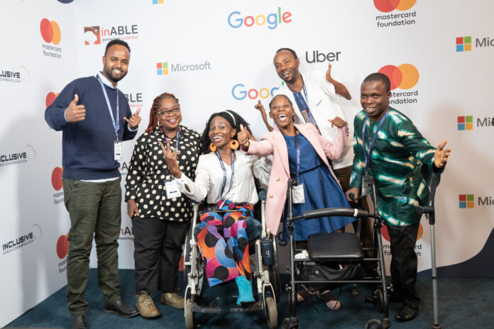
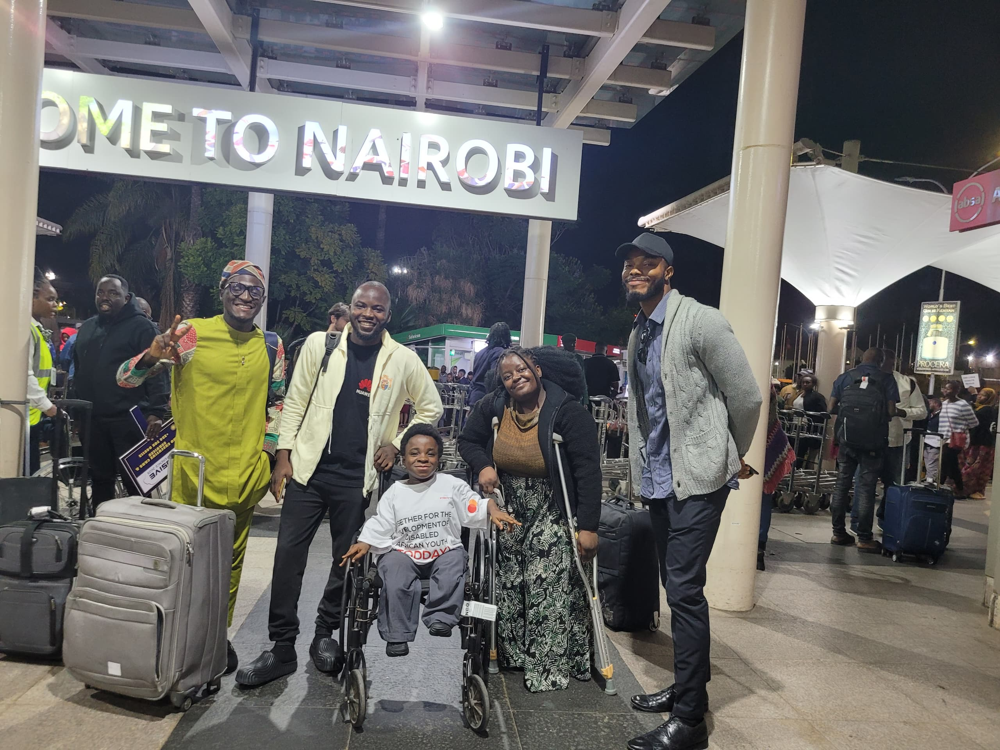
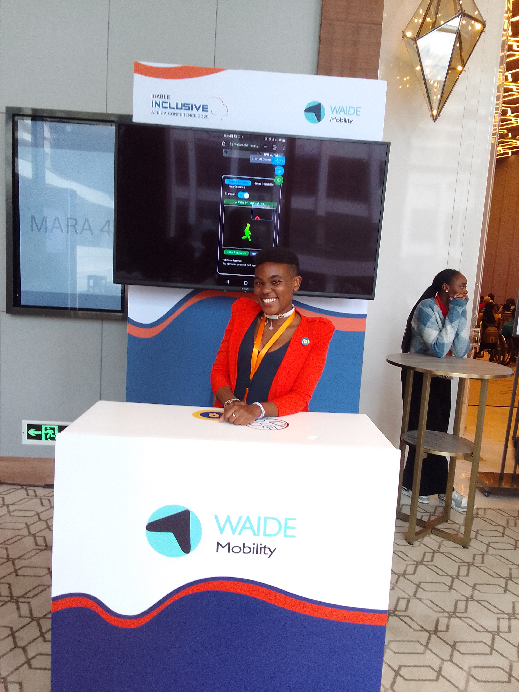
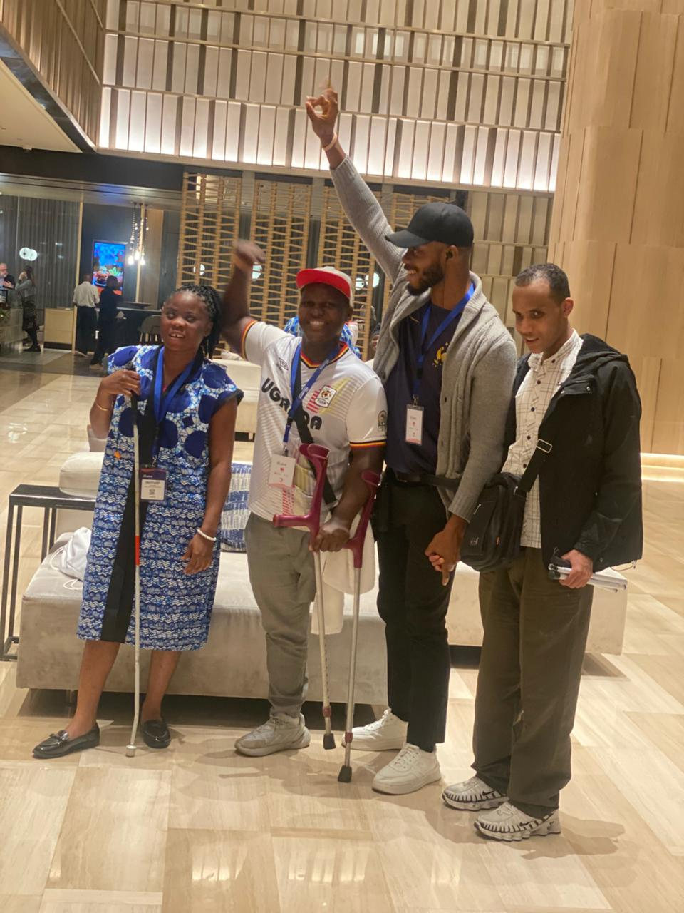

Lessons from Inclusive Africa 2025: Building Technology That Truly Serves
Reflections from the conference where real stories reminded us why accessibility isn't a feature-it's a fundamental.

A Continental Milestone for Digital Inclusion
The sixth edition of the Inclusive Africa Conference, organized by nonprofit inABLE, took place from June 3-5, 2025, at the JW Marriott Hotel in Nairobi, Kenya. This continental milestone brought together global tech giants including Google, Microsoft, Uber, Meta, Intuit, and key development partner Mastercard Foundation, alongside policymakers, entrepreneurs, educators, and organizations representing persons with disabilities.
The conference theme "Scaling Digital Accessibility through Innovation & Entrepreneurship" highlighted how artificial intelligence is being leveraged to power assistive technologies across finance, education, transportation, and public services-exactly the sectors where innovative solutions are desperately needed.

Landing in Nairobi with fellow innovators and speakers for the Inclusive Africa Conference 2025
"In today's increasingly digital world, accessibility is not a luxury or an afterthought but a fundamental human right and a critical foundation for full economic participation."
Waide Mobility: Among the Top 15 Innovators
Being selected as one of the Top 15 innovators at the conference was an honor that validated our mission to transform indoor navigation for people with disabilities. The pitch session provided an invaluable platform to showcase our AI-powered navigation solutions to funders, venture capitalists, and global tech leaders.
Testing our prototype with blind attendees and receiving their real-time feedback was perhaps the most valuable aspect of the conference. Their insights directly shaped our understanding of user needs and technical requirements.

Our main booth setup at the Inclusive Africa Conference 2025 showcasing navigation technology
Conference Impact & Global Reach
Conference Highlights
- Global Partnership: Tech giants Google, Microsoft, Uber, Meta, and Intuit joined forces with African innovators
- Policy Impact: Discussions centered on Kenya's newly enacted Persons with Disabilities Act 2025
- Investment Focus: Pitch sessions connected innovators with funders and venture capitalists
- World Day Recognition: Conference commemorated World Day for Assistive Technology
The Moment That Changed Everything
💫 A Personal Encounter
"My guide left me. I only have a cane. I can't find my way around."
These words, spoken by Peter Katua at JW Marriott Nairobi, reminded me why we build what we build.
These were the words of Peter Katua at the Inclusive Africa Conference 2025. He bumped into me while I was in conversation with the founder of Epicare Africa. According to him, the guide who had accompanied him left him at the venue, and he became stranded, not knowing where to go or how to navigate the JW Marriott Hotel.
"In that moment, I realized something profound: the barriers Peter faces aren't about his capabilities. They exist because the world hasn't built the infrastructure for his independence."
In that moment, I was reminded of why Waide Mobility exists. We need systems, infrastructure, and collaboration to make these tools truly accessible.
Key Reflections from the Conference
🤝 Collaboration Over Competition
The most impactful solutions emerge when organizations work together rather than in silos.
🎯 User-Centered Design
Technology must be built with, not for, the communities it serves.
🌍 Systemic Change
Individual innovations need supportive ecosystems to create lasting impact.
What This Means for Waide Mobility
The conference reinforced our commitment to building more than just navigation tools. We're creating pathways to independence, employment, and dignity.
Our prototype testing revealed crucial insights:
- Audio feedback needs to be contextual and non-intrusive
- Haptic navigation must feel natural, not mechanical
- Integration with existing assistive technologies is essential
- Offline functionality is critical for African infrastructure realities
The Power of Partnership
Our work with inABLE, whose expertise and network have shaped our design and testing, shows what's possible when technology companies partner with Organizations of Persons with Disabilities (OPDs). Founded in 2009, inABLE has established Assistive Technology Labs, spearheaded Kenya's first ICT Accessibility Standard (KS2952), and continues to make access, opportunity, and dignity a reality for all.
We also collaborate with the National Association of the Blind (NAB) Nigeria to extend OPD reach and provide training in remote areas. These partnerships aren't just about validation-they are about ensuring our solutions address real pain points, not imagined ones.

Jacob working directly with persons with disabilities to co-create accessible solutions
"In today's increasingly digital world, accessibility is not a luxury or an afterthought but a fundamental human right and a critical foundation for full economic participation."
A Biblical Perspective
Isaiah 42:16 says: "I will lead the blind by ways they have not known, along unfamiliar paths I will guide them." This verse has fueled our vision and continues to be the pillar on which we lean.
This is God's own project. This is prophecy, and we can achieve it together through technology.
The Path Forward
Peter's story is not just his story. It is a plea on behalf of 250 million individuals in Africa living with visual impairments. We need our hotels, airports, hospitals, shopping malls, campuses, and all public spaces to be digitally accessible and truly inclusive.
⚠️ The Hard Truth
A space that is not digital is not blind-friendly.
If your building, venue, or facility doesn't have digital accessibility infrastructure, you are unintentionally excluding millions of potential customers, employees, and visitors.
🚀 Action Steps for Organizations
Ready to build truly inclusive spaces? Start here:
- Audit your accessibility: Can people with disabilities navigate your space independently?
- Partner with OPDs: Connect with local disability organizations for authentic insights
- Invest in digital infrastructure: Make your spaces digitally accessible
- Measure and iterate: Track usage and continuously improve based on feedback
Our Commitment Moving Forward
"We're not just building navigation technology. We're building bridges to independence."
Join the Movement
Help us build a world where no one gets left behind in unfamiliar spaces.
🌍 Building inclusive infrastructure • One venue at a time